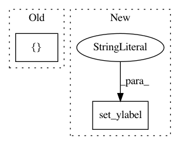

2fff9ca2edbb2db24ef28c9c591d5ba6b0e1e45a,examples/lines_bars_and_markers/stackplot_demo.py,,,#,17
Before Change
x = [1, 2, 3, 4, 5]
y1 = [1, 1, 2, 3, 5]
y2 = [0, 4, 2, 6, 8]
y3 = [1, 3, 5, 7, 9]
y = np.vstack([y1, y2, y3])
labels = ["Fibonacci ", "Evens", "Odds"]
After Change
ax.legend(loc="upper left")
ax.set_title("World population")
ax.set_xlabel("Year")
ax.set_ylabel("Number of people (millions)")
plt.show()
////////////////////////////////////////////////////////////////////////////////////////////////////////////////////////////////////////////////////////////
In pattern: SUPERPATTERN
Frequency: 3
Non-data size: 2
Instances
Project Name: matplotlib/matplotlib
Commit Name: 2fff9ca2edbb2db24ef28c9c591d5ba6b0e1e45a
Time: 2020-06-07
Author: 2836374+timhoffm@users.noreply.github.com
File Name: examples/lines_bars_and_markers/stackplot_demo.py
Class Name:
Method Name:
Project Name: matplotlib/matplotlib
Commit Name: 048cafd2c17219d0e47d90aa073f90d516902a02
Time: 2017-05-30
Author: dstansby@gmail.com
File Name: examples/text_labels_and_annotations/tex_demo.py
Class Name:
Method Name:
Project Name: rodluger/starry
Commit Name: 73bf812cc5598a0e6efb20d11de6568a80125a21
Time: 2018-04-29
Author: rodluger@gmail.com
File Name: misc/stability/brgrid.py
Class Name:
Method Name: RMinusOneRPlusOne